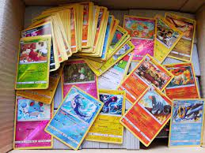

Il mondo delle carte Pokémon
Chi non ha mai comprato un pacchetto di carte nella speranza di trovare una carta super rara? Risposta scontata, l'abbiamo fatto più o meno tutti nella nostra vita Il mondo dei mostriciattoli tascabili ha sviluppato anche un mondo di carte e un circuito competitivo ad esse dedicate. 